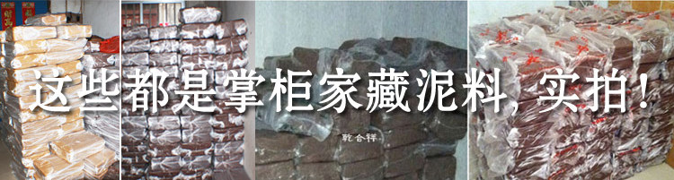

加微信1768717056领取紫砂壶鉴别经验和开壶方法!

大家好，我是老杨，专注纯手工宜兴原矿紫砂壶，和我合作过的壶友都知道我的身份经历，这里再向广大新壶友简单介绍下自己： ◇◇掌柜大学生兼工程师创业紫砂，真壶真照，品质为重，口碑相传◇◇ 掌柜老家江苏宜兴丁蜀镇农村传统紫砂产地，周围人都是做壶的，靠山吃山靠水吃水。祖上都做壶，自产自销，我从小也对紫砂壶耳濡目染。大学毕业后在上海某世界500强外企担任软件工程师，2014年几经思考再三权衡，毅然放弃上海高薪工作和定居机会，回宜兴老家开创自己喜欢的紫砂事业。这决定很艰难，也需要很大的勇气。 回来后一切重头开始，寻找好泥料，寻找合作老师，亲自包揽从制作、烧窑、到拍照、客服、发货的几乎全部环节...累，并快乐着。 日积月累，口碑相传，在如今整体低迷的市场行情中，却一直保持着稳中有涨的销量，在此感谢我的父母辈和各位壶友的大力支持。

因为家庭原因，从小耳闻目染，对紫砂有了很多的了解。每天看着父亲和母亲坚持用传统手工艺制壶，对制壶的每一个细节都严格要求,所以制作周期比较长，越来越觉得，一把紫砂壶的诞生是那么的不容易，而他们态度，对我以后学习制壶的路，产生了很大的影响。
或许是由于从小接触的多了，在我正式学习制壶后，便是得心应手，我做出来的壶很快得到了父亲的认可。在这期间除了在家里跟爷爷和父亲学习制壶，只要有时间父亲就会带我去拜访名师，向其学习、讨教，而我的制壶手艺日益增长。
兄弟姐妹们，紫砂壶是我一生的事业,欢迎大家加我的微信交流 我的微信号：1768717056
紫砂壶泡茶的好处
1、茶香浓郁持久。紫砂壶嘴小、盖严，壶的内壁较粗糙，能有效地防止香气过早散失。长久使用的紫砂茶壶，内壁挂上一层棕红色茶锈，使用时间越长，茶锈积在内壁上越多，故冲泡茶叶后茶汤越加醇郁芳馨。长期使用的紫砂茶壶，即使不放茶，只倒入开水，仍茶香诱人，这是一般茶具所做不到的;
2、紫砂壶泡茶，保温时间长。由于壶壁内部存在着许多小气泡，气泡里又充满着不流动的空气，空气是热的不良导体，故紫砂壶有较好的保温性能;
3、用紫砂壶泡茶，提携抚握不易炙手。紫砂壶线膨胀系数比瓷壶略高，而且没有釉，就不存在坯釉应力的问题;烧成以后的紫砂壶，玻璃极少，有足以克服冷热温度差所产生的急变能力，故具有缓慢的传热性。紫砂茶壶适应冷热急变的能力极佳，即使在上百度的高温中蒸煮后，迅速投到零下的冰雪中，也不会爆裂;
4、紫砂壶里外都不施釉，保持微小的气孔，透气性能好，但又不透水，并具有较强的吸附力，这是一般茶壶所不能比拟的。它能保持茶叶中芳香油遇热挥发而形成馨香，提高茶汤的晚期酸度，起到收敛和杀菌作用。故能稍微延缓茶水的霉败变馊，所谓“盛暑越宿不馊”，道理就在这里。


经过多年的努力，不仅继承了家族的制壶工艺，还得到了很多大师的指点，我的壶可以说是集百家之长，融会贯通形成自己的风格。
我不是什么有名的大师，我也不在乎那些头衔，但是我可以很自信的告诉大家，我做出来的壶绝对不会比那些所谓的大师要差。

我的老婆，在我们没相识之前就开始制壶，她的师傅是2009年手工制陶大赛一等奖获得者，其作品《海棠壶》荣获上海中国公益美术大师精品展金奖，作品《君德如意壶》获国家专利。现任宜兴陶瓷实训基地，制壶培训班辅导教师。（壶的售价高达几万元/把）


而我老婆做出来的壶，也早已得到了师傅的认可。


我们都是专心做壶的人，并不懂网络，更不知道如何在网上卖壶，现在都是我的侄子侄女们在帮我在网上卖壶。后来我听说，有人拿批量机械化生产的低价化工壶(化工泥有毒)、机车壶(普通陶土就能做)和手拉壶充当全手工紫砂壶在网上兜售，知道了此事我的心情异常难过，这是对我们全手工紫砂壶从业者的侮辱。
我在此也向大家保证，我所售出的每一把壶，保证是宜兴本地原矿石料所产,100%手工制作,如若有假，假一赔万。用江苏宜兴紫砂陶土烧制而成的紫砂陶茶具，是举世公认的质地最好的茶具，最棒的茶具。

现在我们一家人，仍然以制壶为生，老父亲年龄大了，眼神不好，已不再亲手做壶，在自家的石料厂里专心把好原料关。
挑选泥料是每天必备的工作，好壶必用好料，陈腐间很有讲究。提炼好的泥，得保证适当的温度，不随意开门进出。


我们所有的壶，都是本地的原矿石料，我们现在所用的石料，都是祖辈上储存的黄龙山原矿石料，现在可以说是用一点少一点。原矿紫砂经过挑选之后，都堆在这里露天风化


家中上百年的存货，这些都是老辈的从黄龙山上一点点拉回来的。现在真的是用一点少一点。


现在我们所有的壶，从泥料开始到烧制成型，我都会全程跟踪，看好把握好每一个环节，保证所有的货出来都是精品。
我希望通过微信把最好的紫砂壶带给大家，加我的微信号：1768717056 或打开微信扫描下图的二维码添加我的微信：


壶盖整口完成后，还要经过第二次烧制才算真正完成，才能交到客户手里。在整个流程中，如若发现有不合格的壶，我会直接把它销毁，以防流入市场中。


我希望通过微信把最好的紫砂壶带给大家，加我的微信号：1768717056 或打开微信扫描下图的二维码添加我的微信：